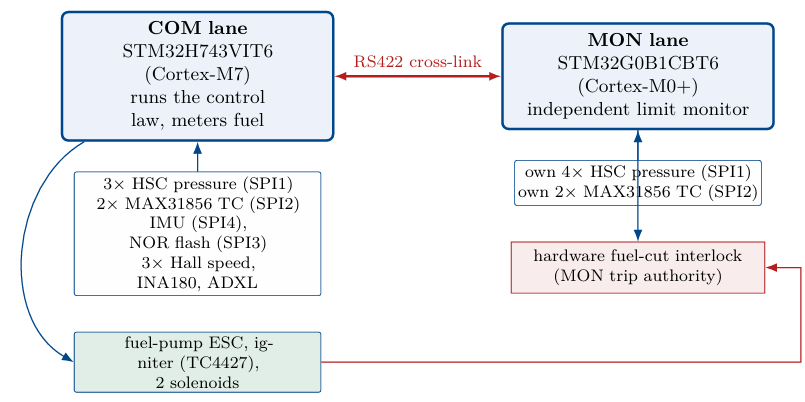
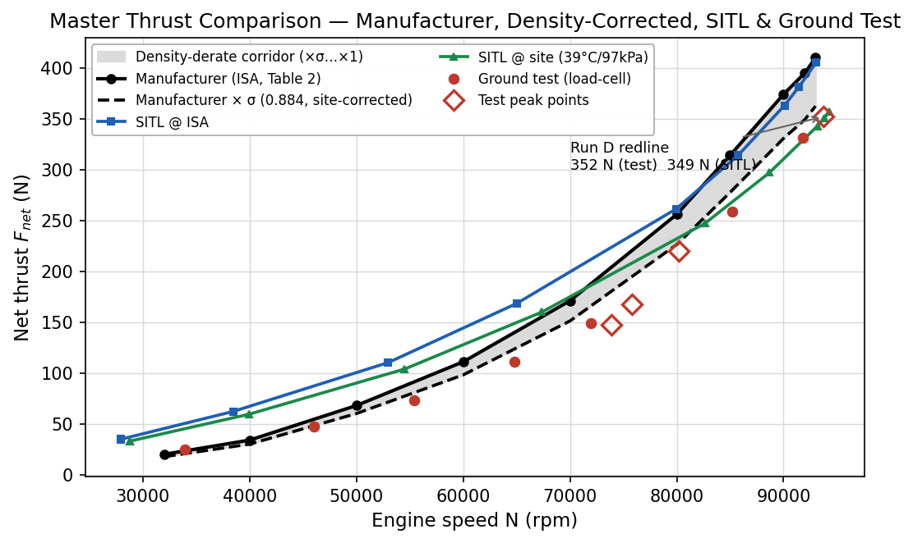
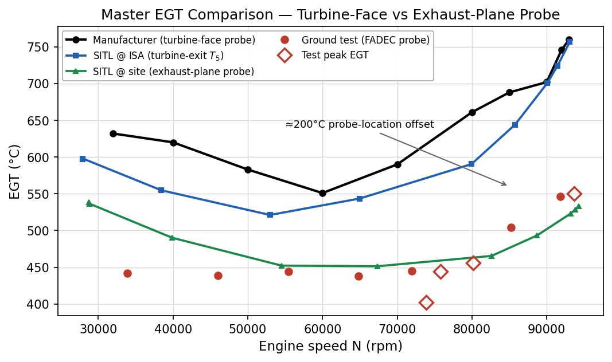
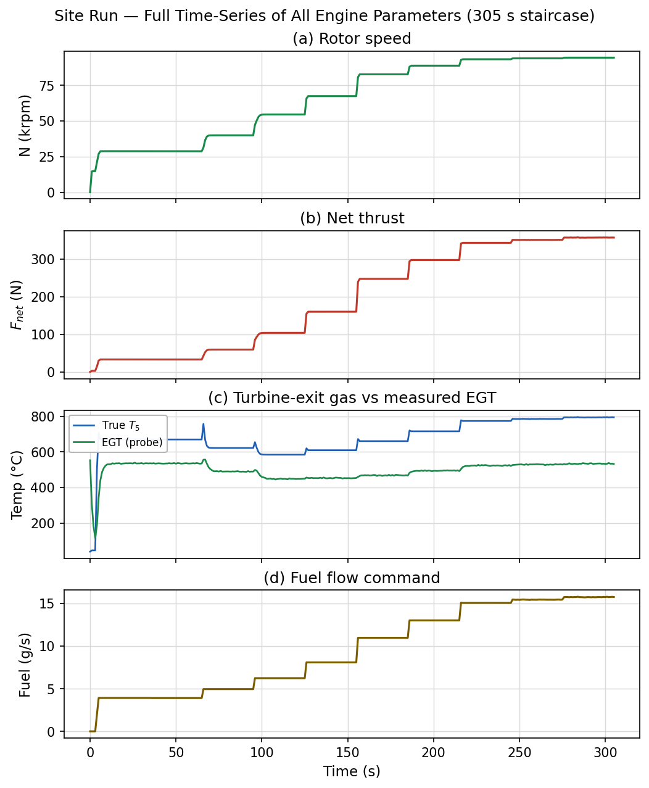
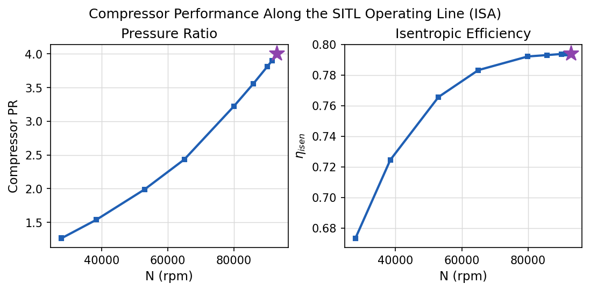
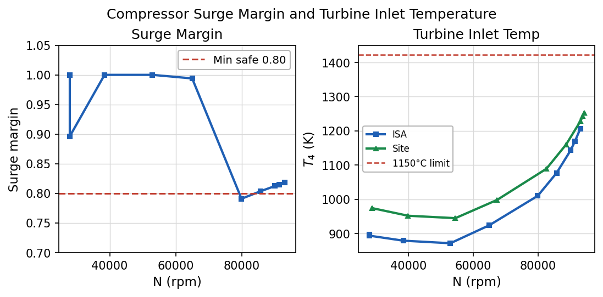

Project · Propulsion Control
Gas Turbine Engine team: engine control for a 130 kg hybrid microturbojet + electric-ducted-fan aircraft.

Full authority means there is no mechanical backup, so an error in the controller is an error in the engine. The controller is a dual-lane board on an eight-layer stackup, in an annular form factor that wraps the engine. The command lane is an STM32H743 Cortex-M7 that runs the control law and meters fuel. The monitor lane is a deliberately smaller STM32G0B1 Cortex-M0+ running simpler code off its own sensors on separate SPI buses, so a fault in the command lane has no path into the monitor’s verdict. The two meet only on an RS422 cross-link, and trip authority is asymmetric.
The firmware is split into sensing, scheduling, actuation (fuel pump and the torch-igniter state machine) and protection modules with defined interfaces, so a scheduling error cannot disable the limit that guards it, and a lane can be rehosted without rewriting the control laws.
After designing the board I reviewed every net against the silicon documentation rather than the schematic net names. Eight defects surfaced, six of which would have survived functional bring-up: a CAN transceiver wired to pins with no FDCAN function, a split reference plane under long runs, decoupling below the reference design, an unfused rail exported to flight equipment, watchdogs left in factory-disabled strapping, and gaps in reverse-polarity protection among them. All were resolved before fabrication.
The controller is developed against a C++ plant model rather than against an engine, so a bad fuel schedule costs a rerun instead of a turbine. The simulator was verified against the manufacturer specification at ISA conditions and validated against a hot-day ground-test campaign (39 °C, 97 kPa) with load-cell and FADEC-terminal data, using the same 305-second fuel staircase held to thermo-mechanical equilibrium at ten power settings. Across 70–93 k rpm it reproduces manufacturer thrust to a mean 5% and EGT to a mean 28 °C, and the atmospheric derate emerges from first principles rather than being applied as a correction.





The engine work sits inside a hybrid UAV powertrain that pairs microturbojets with electric ducted fans on a 130 kg aircraft, blending the endurance of a turbine with the responsiveness of electric thrust.